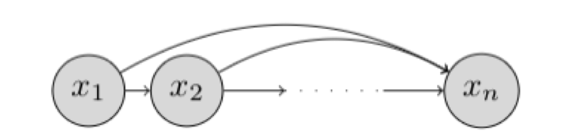

Autoregressive models
We assume we are given access to a dataset: $$ \mathcal{D} = { \mathbf{x}_1, \mathbf{x}_2, \dots, \mathbf{x}_m } $$ where each datapoint is n-dimensional. For simplicity, we assume the datapoints are binary. $$ x_i \in {0,1}^n $$
Representation
If you have n random variables: $$ X_1, X_2, \dots, X_n $$ then their joint probability can be written as a product of conditional probabilities: $$ P(X_1, X_2, \dots, X_n) = P(X_1) \cdot P(X_2 \mid X_1) \cdot P(X_3 \mid X_1, X_2) \cdot \dots \cdot P(X_n \mid X_1, X_2, \dots, X_{n-1}) $$ In words:
The probability of all n variables taking particular values equals: → the probability of the first variable,
→ times the probability of the second variable given the first,
→ times the probability of the third variable given the first two,
→ and so on, until the n-th variable.
By this chain rule of probability, we can factorize the joint distribution over the n-dimensions as:
where
denotes the vector of random variables with index less than i.
The chain rule factorization can be expressed graphically as a Bayesian network.

Such a Bayesian network that makes no conditional independence assumptions is said to obey the autoregressive property. The term autoregressive originates from the literature on time-series models where observations from the previous time-steps are used to predict the value at the current time step. Here, we fix an ordering of the variables x1, x2, …, xn and the distribution for the i-th random variable depends on the values of all the preceding random variables in the chosen ordering x1, x2, …, xi−1.
If we allow for every conditional p(xi|x<i) to be specified in a tabular form, then such a representation is fully general and can represent any possible distribution over n random variables. However, the space complexity for such a representation grows exponentially with n.
To see why, let us consider the conditional for the last dimension, given by p(xn|x<n). In order to fully specify this conditional, we need to specify a probability for 2^(n−1) configurations of the variables x1, x2, …, xn−1. Since the probabilities should sum to 1, the total number of parameters for specifying this conditional is given by 2^(n−1)−1. Hence, a tabular representation for the conditionals is impractical for learning the joint distribution factorized via chain rule.
In an autoregressive generative model, the conditionals are specified as parameterized functions with a fixed number of parameters. Specifically, we assume that each conditional distribution corresponds to a Bernoulli random variable. We then learn a function that maps the preceding random variables to the parameter (mean) of this Bernoulli distribution. Hence, we have:
where the function is defined as:
and theta_i denotes the set of parameters used to specify this function. This function takes in a vector of size (i-1) where each element is a 0 or a 1, and outputs a scalar bit.
The total number of parameters in an autoregressive generative model is given by:
In the simplest case, we can specify the function as a linear combination of the input elements followed by a sigmoid non-linearity (to restrict the output to lie between 0 and 1). This gives us the formulation of a fully-visible sigmoid belief network (FVSBN).
where \(\sigma\) denotes the sigmoid function and \(\theta_i = \{\alpha^{(i)}_0, \alpha^{(i)}_1, \dots, \alpha^{(i)}_{i-1}\}\) denote the parameters of the mean function. The conditional for variable \(i\) requires \(i\) parameters, and hence the total number of parameters in the model is given by \(\sum_{i=1}^n i = O(n^2)\). Note that the number of parameters are much fewer than the exponential complexity of the tabular case.
A natural way to increase the expressiveness of an autoregressive generative model is to use more flexible parameterizations for the mean function e.g., multi-layer perceptrons (MLP). For example, consider the case of a neural network with 1 hidden layer. The mean function for variable \(i\) can be expressed as
where \(\mathbf{h}_i \in \mathbb{R}^d\) denotes the hidden layer activations for the MLP and \(\theta_i = \{\mathbf{A}_i \in \mathbb{R}^{d \times (i-1)}, \mathbf{c}_i \in \mathbb{R}^d, \boldsymbol{\alpha}^{(i)} \in \mathbb{R}^d, b_i \in \mathbb{R}\}\) are the set of parameters for the mean function \(\mu_i(\cdot)\). The total number of parameters in this model is dominated by the matrices \(\mathbf{A}_i\) and given by \(O(n^2d)\).
Note: The term "mean function" here refers to the function that determines the mean (expected value) of the Bernoulli distribution for each variable. Since we're modeling binary variables, the mean of the Bernoulli distribution is the probability of the variable being 1. The sigmoid function \(\sigma\) ensures that this probability lies between 0 and 1.
For a Bernoulli random variable \(X\) with parameter \(p\), the expectation (mean) is given by:
This is because: - \(X\) takes value 1 with probability \(p\) - \(X\) takes value 0 with probability \((1-p)\) - The expectation is the weighted sum of all possible values, where the weights are their respective probabilities
Therefore, when we say the mean function determines the mean of the Bernoulli distribution, we're saying it determines the probability \(p\) of the variable being 1.
The Neural Autoregressive Density Estimator (NADE) provides an alternate MLP-based parameterization that is more statistically and computationally efficient than the vanilla approach. In NADE, parameters are shared across the functions used for evaluating the conditionals. In particular, the hidden layer activations are specified as
where \(\theta = \{\mathbf{W} \in \mathbb{R}^{d \times n}, \mathbf{c} \in \mathbb{R}^d, \{\boldsymbol{\alpha}^{(i)} \in \mathbb{R}^d\}_{i=1}^n, \{b_i \in \mathbb{R}\}_{i=1}^n\}\) is the full set of parameters for the mean functions \(f_1(\cdot), f_2(\cdot), \dots, f_n(\cdot)\). The weight matrix \(\mathbf{W}\) and the bias vector \(\mathbf{c}\) are shared across the conditionals. Sharing parameters offers two benefits:
-
The total number of parameters gets reduced from \(O(n^2d)\) to \(O(nd)\).
-
The hidden unit activations can be evaluated in \(O(nd)\) time via the following recursive strategy:
with the base case given by \(\mathbf{a}_1 = \mathbf{c}\).
The RNADE algorithm extends NADE to learn generative models over real-valued data. Here, the conditionals are modeled via a continuous distribution such as a equi-weighted mixture of \(K\) Gaussians. Instead of learning a mean function, we now learn the means \(\mu_{i,1}, \mu_{i,2}, \dots, \mu_{i,K}\) and variances \(\Sigma_{i,1}, \Sigma_{i,2}, \dots, \Sigma_{i,K}\) of the \(K\) Gaussians for every conditional. For statistical and computational efficiency, a single function \(g_i: \mathbb{R}^{i-1} \to \mathbb{R}^{2K}\) outputs all the means and variances of the \(K\) Gaussians for the \(i\)-th conditional distribution.
The conditional distribution \(p_{\theta_i}(x_i \mid \mathbf{x}_{<i})\) in RNADE is given by:
where \(\mathcal{N}(x; \mu, \Sigma)\) denotes the probability density of a Gaussian distribution with mean \(\mu\) and variance \(\Sigma\) evaluated at \(x\). The parameters \(\{\mu_{i,k}, \Sigma_{i,k}\}_{k=1}^K\) are the outputs of the function \(g_i(\mathbf{x}_{<i})\).
This is how RNADE is autoregressive. Example sequence showing autoregressive dependencies:
\(x_1\): - Input to \(g_1\): \(\mathbf{x}_{<1} = []\) (empty) - Output: \(\{\mu_{1,k}, \Sigma_{1,k}\}_{k=1}^K\) for \(p(x_1)\)
\(x_2\): - Input to \(g_2\): \(\mathbf{x}_{<2} = [x_1]\) - Output: \(\{\mu_{2,k}, \Sigma_{2,k}\}_{k=1}^K\) for \(p(x_2 \mid x_1)\)
\(x_3\): - Input to \(g_3\): \(\mathbf{x}_{<3} = [x_1, x_2]\) - Output: \(\{\mu_{3,k}, \Sigma_{3,k}\}_{k=1}^K\) for \(p(x_3 \mid x_1, x_2)\)
\(x_4\): - Input to \(g_4\): \(\mathbf{x}_{<4} = [x_1, x_2, x_3]\) - Output: \(\{\mu_{4,k}, \Sigma_{4,k}\}_{k=1}^K\) for \(p(x_4 \mid x_1, x_2, x_3)\)
This sequential, conditional generation process is what makes RNADE an autoregressive model. The mixture of Gaussians is just the form of the conditional distribution, but the autoregressive property comes from how these distributions are parameterized based on previous variables.
Learning and inference
Recall that learning a generative model involves optimizing the closeness between the data and model distributions. One commonly used notion of closeness is the KL divergence between the data and the model distributions:
where: - \(p_{data}\) is the true data distribution - \(p_{\theta}\) is our model distribution parameterized by \(\theta\) - \(\Theta\) is the set of all possible parameter values - \(d_{KL}\) is the Kullback-Leibler divergence
Let's break down how this minimization works:
- For a fixed value of \(\theta\), we compute:
- The expectation over all possible data points \(x\) from \(p_{data}\)
- For each \(x\), we compute \(\log p_{data}(x) - \log p_{\theta}(x)\)
-
This gives us a single scalar value for this particular \(\theta\)
-
The minimization operator \(\min_{\theta \in \Theta}\) then:
- Tries different values of \(\theta\) in the parameter space \(\Theta\)
-
Finds the \(\theta\) that gives the smallest expected value
-
Since \(p_{data}\) is constant with respect to \(\theta\), minimizing the KL divergence is equivalent to maximizing the expected log-likelihood of the data under our model:
This is because \(\log p_{data}(x)\) doesn't depend on \(\theta\), so it can be treated as a constant. Minimizing \(-\log p_{\theta}(x)\) is the same as maximizing \(\log p_{\theta}(x)\)
To approximate the expectation over the unknown \(p_{data}\), we make an assumption: points in the dataset \(\mathcal{D}\) are sampled i.i.d. from \(p_{data}\). This allows us to obtain an unbiased Monte Carlo estimate of the objective as:
The maximum likelihood estimation (MLE) objective has an intuitive interpretation: pick the model parameters \(\theta \in \Theta\) that maximize the log-probability of the observed datapoints in \(\mathcal{D}\).
In practice, we optimize the MLE objective using mini-batch gradient ascent. The algorithm operates in iterations. At every iteration \(t\), we sample a mini-batch \(\mathcal{B}_t\) of datapoints sampled randomly from the dataset (\(|\mathcal{B}_t| < |\mathcal{D}|\)) and compute gradients of the objective evaluated for the mini-batch. These parameters at iteration \(t+1\) are then given via the following update rule:
where \(\theta^{(t+1)}\) and \(\theta^{(t)}\) are the parameters at iterations \(t+1\) and \(t\) respectively, and \(r_t\) is the learning rate at iteration \(t\). Typically, we only specify the initial learning rate \(r_1\) and update the rate based on a schedule.
Now that we have a well-defined objective and optimization procedure, the only remaining task is to evaluate the objective in the context of an autoregressive generative model. To this end, we first write the MLE objective in terms of the joint probability:
Then, we substitute the factorized joint distribution of an autoregressive model. Since \(p_{\theta}(x) = \prod_{i=1}^n p_{\theta_i}(x_i | x_{<i})\), we have:
Substituting this into the MLE objective, we get:
where \(\theta = \{\theta_1, \theta_2, \dots, \theta_n\}\) now denotes the collective set of parameters for the conditionals.
Inference in an autoregressive model is straightforward. For density estimation of an arbitrary point \(x\), we simply evaluate the log-conditionals \(\log p_{\theta_i}(x_i | x_{<i})\) for each \(i\) and add these up to obtain the log-likelihood assigned by the model to \(x\). Since we have the complete vector \(x = [x_1, x_2, \dots, x_n]\), we know all the values needed for each conditional \(x_{<i}\), so each of the conditionals can be evaluated in parallel. Hence, density estimation is efficient on modern hardware.
For example, given a 4-dimensional vector \(x = [x_1, x_2, x_3, x_4]\), we can compute all conditionals in parallel:
- \(\log p_{\theta_1}(x_1)\) (no conditioning needed)
- \(\log p_{\theta_2}(x_2 | x_1)\) (using known \(x_1\))
- \(\log p_{\theta_3}(x_3 | x_1, x_2)\) (using known \(x_1, x_2\))
- \(\log p_{\theta_4}(x_4 | x_1, x_2, x_3)\) (using known \(x_1, x_2, x_3\))
Then sum them to get the total log-likelihood: \(\log p_{\theta}(x) = \sum_{i=1}^4 \log p_{\theta_i}(x_i | x_{<i})\)
Sampling from an autoregressive model is a sequential procedure. Here, we first sample \(x_1\), then we sample \(x_2\) conditioned on the sampled \(x_1\), followed by \(x_3\) conditioned on both \(x_1\) and \(x_2\) and so on until we sample \(x_n\) conditioned on the previously sampled \(x_{<n}\). For applications requiring real-time generation of high-dimensional data such as audio synthesis, the sequential sampling can be an expensive process.
Finally, an autoregressive model does not directly learn unsupervised representations of the data. This is because:
- The model directly models the data distribution \(p(x)\) through a sequence of conditional distributions \(p(x_i | x_{<i})\)
- There is no explicit latent space or bottleneck that forces the model to learn a compressed representation
- Each variable is modeled based on previous variables, but there's no mechanism to learn a global, compressed representation of the entire data point
- The model's parameters \(\theta_i\) are specific to each conditional distribution and don't encode a meaningful representation of the data
In contrast, latent variable models like variational autoencoders explicitly learn a compressed representation by: 1. Introducing a latent space \(z\) that captures the essential features of the data 2. Learning an encoder that maps data to this latent space 3. Learning a decoder that reconstructs data from the latent space 4. Using a bottleneck that forces the model to learn meaningful representations